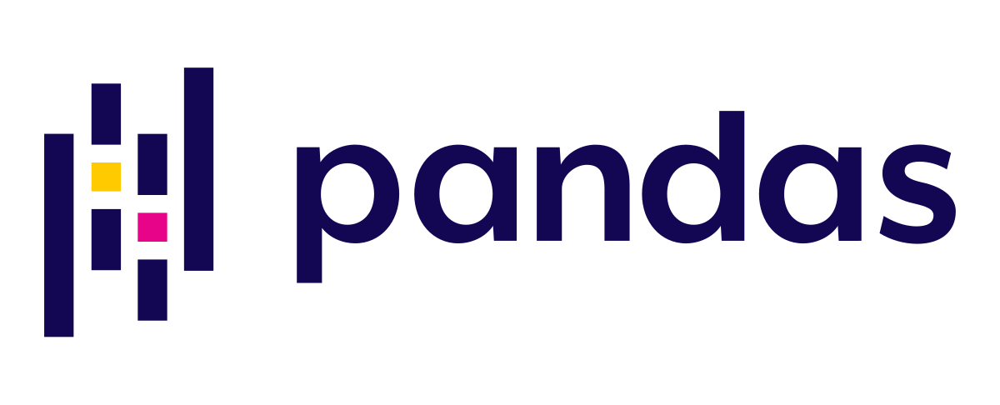

2024 - Present
Data Scientist at Aily Labs
Developing state-of-the-art AI solutions for business decision intelligence. Leading NLP initiatives and building scalable machine learning pipelines for enterprise clients.
Data Scientist & ML Engineer
Building AI-powered solutions for business decision intelligence using NLP and machine learning. Master's in Business Analytics and Big Data from IE School of Science and Technology, where I won first place in both the IE Sustainability Datathon and Impact Project.
Developing state-of-the-art AI solutions for business decision intelligence. Leading NLP initiatives and building scalable machine learning pipelines for enterprise clients.
Joined focusing on NLP and machine learning solutions. Previously completed an internship at FITIZENS working on Computer Vision and Human Pose Estimation using deep learning techniques.
Completed Master's in Business Analytics and Big Data. Won first place in both the IE Sustainability Datathon and Impact Project, demonstrating excellence in data-driven problem solving.
Worked in the energy sector developing Salesforce solutions. Gained proficiency in Java, SQL, HTML, JavaScript, and CSS while building enterprise-scale applications.
Completed Bachelor's degree in Computer Science Engineering. Participated in Erasmus+ program at Wrocław University of Science and Technology in Poland, gaining international experience.

Pandas Apache Spark SQL AWS NLP Machine Learning MLOps Apache Kafka Hadoop Power BI LookerInterested in collaborating on AI projects or discussing data science? I'm always open to new opportunities and conversations.
 TensorFlow
TensorFlow
 Scikit-learn
Scikit-learn
 NLP
NLP